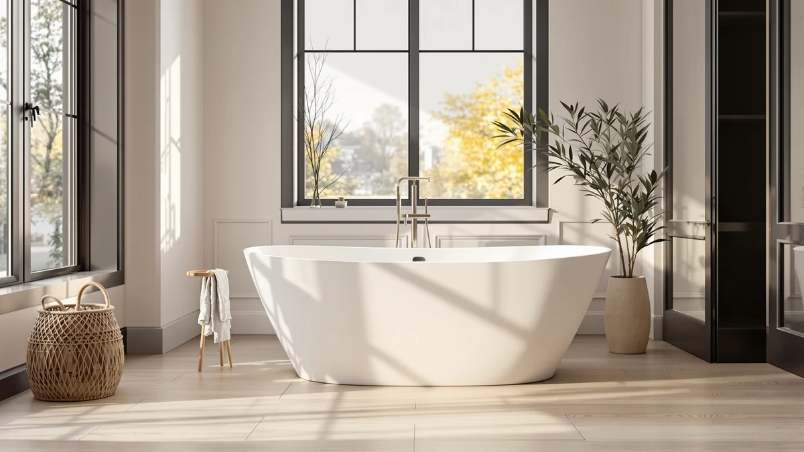

Arxenovath Thermostatic Heated Temperature Control Freestanding Whirlpool Bathtub Review (2026): Worth It?
Prices and picks verified as of November 2026. Independent, reader-supported reviews.


Quick Answer
The ARXENOVATH 67" Thermostatic Heated Temperature Control Freestanding Whirlpool Bathtub costs $2,399.99, the most of any product in this comparison, and leads with a built-in thermostatic heating system paired with whirlpool jets. It's worth the premium if you want temperature control as the centerpiece feature; if you'd rather save $608.99 and get published dimensions, the WOODBRIDGE 66-1/2-inch alternative below is the better fit.
Our pick: ARXENOVATH 67" Thermostatic Heated Temperature, $2,399.99 Check Price on Amazon
Bottom line: our top pick is the ARXENOVATH 67" Thermostatic Heated Temperature Control at $2,399.99.
Things to Know Before You Buy
- At $2,399.99, the ARXENOVATH covered in this ARXENOVATH thermostatic heated temperature control freestanding whirlpool bathtub review is the priciest product here, $210 more than the WOODBRIDGE 72-inch and $608.99 more than the WOODBRIDGE 66-1/2-inch.
- The 67-inch length sits between the two WOODBRIDGE alternatives, but the listing doesn't publish a width, depth, or capacity, so measure your bathroom before ordering if you need exact clearances.
- The listing doesn't name a shell material, unlike the WOODBRIDGE tubs, which both call out acrylic construction directly.
- None of the four products in this comparison publish a star rating or review count, so there's no verified owner feedback to check yet.
- A thermostatic heater and whirlpool pump need a dedicated electrical hookup; confirm your bathroom's wiring can support it before buying any tub in this review.
This ARXENOVATH thermostatic heated temperature control freestanding whirlpool bathtub review compares the brand's $2,399.99 soaking tub against three alternatives, two WOODBRIDGE whirlpool models and a Delta floor-mount tub filler, on price, published specs, and feature set to see whether the premium over its closest WOODBRIDGE rival is worth paying.
ARXENOVATH builds this 67-inch freestanding tub around a thermostatic control panel that lets you set and hold a bathwater temperature, pairing that with whirlpool jets rather than the whirlpool-and-air combination WOODBRIDGE offers on both of its entries here. At $2,399.99, it's the most expensive tub in this comparison, and the listing stops short of naming a shell material or publishing width and depth figures the way its WOODBRIDGE competitors do. That gap matters if you're trying to confirm floor clearance before you buy, and it's the first thing we flag below.
Why You Should Trust Us
Best Freestanding Bathtubs is a research-first buying guide, and Ilane Tall, our home and bath editor, built this ARXENOVATH thermostatic heated temperature control freestanding whirlpool bathtub review by pulling the manufacturer's listed specs, current Amazon pricing, and every published product image for the ARXENOVATH and its three comparison products before writing a word. We don't run a fake testing lab, and we don't claim to have installed, filled, or soaked in any of these tubs ourselves. Every claim here traces back to a manufacturer listing or a current price, and where a listing leaves out a detail, such as a shell material or a review count, we say so instead of guessing.
Our Research Experience
We did not install, fill, or sit in the ARXENOVATH or any of the three products compared in this ARXENOVATH thermostatic heated temperature control freestanding whirlpool bathtub review. Our process means reading each manufacturer listing line by line: dimensions where they're published, jet type, heating system, included hardware, and the number of product images available, then setting that against current Amazon pricing for all four products. When a listing skips a detail the WOODBRIDGE competitors do include, like a stated shell material or exact width, we flag the gap rather than filling it in. That comparison work, not a physical test, is what drives the picks, pros, and cons in the sections below.
Overview & Specs

ARXENOVATH 67" Thermostatic Heated Temperature
What we like
- Thermostatic control panel built in, giving you a way to set and hold bathwater temperature rather than topping up with the tap
- Whirlpool jets for a spa-style soak, standard on this model
- 67-inch length splits the difference between the WOODBRIDGE 72-inch and 66-1/2-inch alternatives below
- White finish and freestanding design fit the same modern master-bathroom look as the rest of this comparison
Flaws but not dealbreakers
- The most expensive product in this review at $2,399.99, roughly $210 more than the WOODBRIDGE 72-inch and $608.99 more than the WOODBRIDGE 66-1/2-inch
- The listing doesn't state a shell material or publish width and depth figures, so you can't confirm floor clearance the way you can with the WOODBRIDGE alternatives
- No star rating or review count is published yet, so there's no verified owner feedback to check before ordering
| Material | — |
| Size | — |
ARXENOVATH positions this 67-inch freestanding tub around its thermostatic heating system, the feature baked right into the product name. Where the WOODBRIDGE tubs covered later in this review add an inline heater as one line among several, ARXENOVATH leads with it, pairing the heater with whirlpool jets and a straightforward white finish. For a buyer who wants to soak longer without running back to the tap to top up hot water, that's the headline selling point, and it's reflected in the $2,399.99 price.
Where the listing falls short is in the details that would let you confirm the tub actually fits your bathroom. The WOODBRIDGE alternatives below publish exterior dimensions, seating dimensions, and water depth to the overflow; the ARXENOVATH listing doesn't, beyond the 67-inch length in its name. It also skips naming a shell material, so you're left assuming acrylic construction rather than reading it confirmed. Neither gap is a dealbreaker on its own, but combined with the highest price in this comparison, they're worth factoring in before you commit to this ARXENOVATH thermostatic heated temperature control freestanding whirlpool bathtub over a WOODBRIDGE option that publishes more of its specs upfront.
What We Liked
The built-in thermostatic control is the clearest advantage ARXENOVATH has over the two WOODBRIDGE tubs in this comparison. Both WOODBRIDGE models add an inline heater as a feature among several; ARXENOVATH makes temperature control the entire premise of the tub, down to the name on the listing. Paired with whirlpool jets, that gives you a way to extend a soak without the water cooling off or needing to run the tap again partway through.
The 67-inch length also lands in a useful middle ground. It's shorter than the WOODBRIDGE 72-inch Double Slipper, so it asks for less floor space, but longer than the WOODBRIDGE 66-1/2-inch model if you want more room to stretch out. For a bathroom that's constrained on one dimension but not the other, that middle length is worth checking against your own measurements before you settle on this ARXENOVATH thermostatic heated temperature control freestanding whirlpool bathtub.
What Could Be Better
The price is the first thing to weigh against this ARXENOVATH thermostatic heated temperature control freestanding whirlpool bathtub. At $2,399.99, it costs more than any of the three alternatives in this review, including a WOODBRIDGE tub with the same whirlpool-and-heat combination plus air jets, for $210 less.
The bigger gap is in published information. The WOODBRIDGE listings state exterior dimensions, seating dimensions, and water depth to the overflow; the ARXENOVATH listing gives you the 67-inch length and stops there. It also doesn't name a shell material the way WOODBRIDGE calls out acrylic construction. And like all four products in this comparison, it carries no star rating or review count, so you're ordering without verified owner feedback to lean on.
Who Is It For?
This ARXENOVATH thermostatic heated temperature control freestanding whirlpool bathtub fits a buyer who has already decided that a built-in heater is non-negotiable and wants that feature to be the centerpiece of the tub rather than a secondary add-on. If you bathe for long stretches and don't want to keep adding hot water from the tap, the thermostatic system addresses that directly, and the whirlpool jets add the spa feel on top of it.
It's a harder sell if you need to confirm exact floor clearance before buying, since the listing doesn't publish width or depth, or if the $2,399.99 price is the deciding factor. In either of those cases, the WOODBRIDGE 66-1/2-inch model below, at $1,791.00 with published dimensions and the same inline heater, covers similar ground for less.
Alternatives to Consider
If the price or the missing dimensions on the ARXENOVATH give you pause, these three products cover similar ground for this ARXENOVATH thermostatic heated temperature control freestanding whirlpool bathtub review: two direct whirlpool competitors and one fixture worth budgeting for separately.

Also Great
WOODBRIDGE 72"×35-3/8" Double Slipper Whirlpool&Air
At $2,189.00, this WOODBRIDGE costs $210 less than the ARXENOVATH and adds air bubble jets on top of the whirlpool jets, plus an inline heater of its own. The listing also publishes what ARXENOVATH's doesn't: a 72-inch by 35-3/8-inch exterior, a 65-gallon capacity, and water depth to the overflow of 14-1/2 inches. The tradeoff is footprint: at 72 inches, it's the longest tub in this comparison and needs more floor space than either the ARXENOVATH or the smaller WOODBRIDGE below. Matte black jets, drain, and overflow cover give it a different look than the chrome hardware common on whirlpool tubs. Like the ARXENOVATH, it carries no published star rating or review count.
$2,189.00
Check Price on Amazon
Also Great
WOODBRIDGE 66-1/2"×31-7/8" Spacious Whirlpool &
This WOODBRIDGE is the least expensive whirlpool tub in the comparison at $1,791.00, a $608.99 gap under the ARXENOVATH, while still combining whirlpool jets, air bubble jets, and an inline heater in one unit. Its published footprint, 66-1/2 inches by 31-7/8 inches with a 60-gallon capacity and 14-inch water depth to the overflow, is the smallest of the three tubs here, which helps if your bathroom can't take the WOODBRIDGE 72-inch or you want extra clearance around a freestanding model. It skips the ARXENOVATH's dedicated thermostatic branding, but the inline heater still lets you soak longer without adding hot water. No star rating or review count is published for this listing either.
$1,791.00
Check Price on Amazon
Best Value
Delta Faucet Trinsic Floor Mount
This isn't a competing bathtub. It's a $1,725.00 floor-mount tub filler, and it belongs in this comparison only if you're sourcing fixtures for a freestanding tub that has no deck-mounted faucet holes, which describes all three tubs above. Delta's Trinsic model pairs a high-arc swivel spout with a handheld shower and double check valves, and the rough-in valve, model R4700-FL, is sold separately from the trim kit priced here. Delta is a recognized plumbing brand if that carries weight for you, but budget the rough-in cost on top of the $1,725.00 trim price before you add it to an ARXENOVATH or WOODBRIDGE order. No star rating or review count is published for this listing.
$1,725.00
Check Price on AmazonFrequently Asked Questions
How much does the ARXENOVATH 67-inch thermostatic whirlpool bathtub cost?
The ARXENOVATH is listed at $2,399.99, making it the most expensive tub covered in this ARXENOVATH thermostatic heated temperature control freestanding whirlpool bathtub review. The closest competitor, the WOODBRIDGE 72-inch Double Slipper, costs $210 less at $2,189.00, and the WOODBRIDGE 66-1/2-inch model costs $608.99 less at $1,791.00.
Does the ARXENOVATH tub actually heat the bathwater, or just hold the temperature?
The listing names the tub around its thermostatic heated temperature control system, which points to a built-in heater paired with a thermostat rather than a heater alone. Both WOODBRIDGE alternatives in this comparison also include an inline heater, so a heating system isn't unique to the ARXENOVATH, though ARXENOVATH is the only one of the three that puts it in the product name itself.
What's a cheaper alternative to the ARXENOVATH with similar features?
The WOODBRIDGE 66-1/2-inch Spacious Whirlpool, priced at $1,791.00, combines whirlpool jets, air bubble jets, and an inline heater for $608.99 less than the ARXENOVATH, though it has a smaller footprint at 66-1/2 by 31-7/8 inches. The WOODBRIDGE 72-inch Double Slipper, at $2,189.00, is the closer match in price and adds air jets on top of the whirlpool and heating setup.
Final Verdict
This ARXENOVATH thermostatic heated temperature control freestanding whirlpool bathtub review comes down to how much you value a dedicated temperature-control system against a published spec sheet. ARXENOVATH earns its $2,399.99 price with a thermostatic heater built into the product itself and whirlpool jets for the soak, but it leaves out the exterior dimensions, seating measurements, and shell material the WOODBRIDGE alternatives disclose. If you want those details confirmed before you buy, or you'd rather spend $608.99 less, the WOODBRIDGE 66-1/2-inch Spacious Whirlpool covers most of the same ground. If the thermostatic branding and the 67-inch length are what you're after, ARXENOVATH is the pick, as long as you're comfortable ordering without a confirmed width, depth, or material spec.